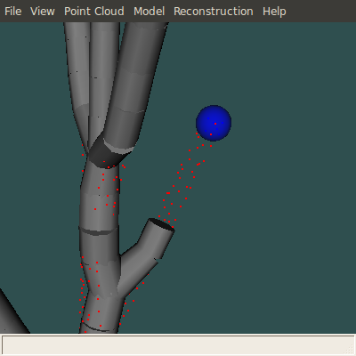
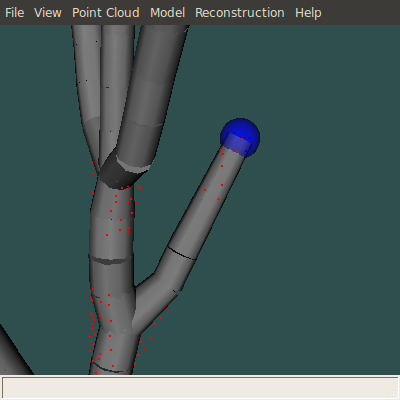

Quick Tutorial¶
This is a quick overview of the PypeTree UI and basic features.
Point Clouds¶
A point cloud is a set of 3d points:
- You can load an existing one with File->Open (point cloud files must have an .asc extension).
- A new point cloud can also be created by sampling an artificial L-System model with Model->L-System.
- Once a point cloud is on screen, it can be downsampled with Point Cloud->Aggregate, or have its branched clipped at a certain geodesic distance with Point Cloud->Geodesic Clipping.
- If an articulation sphere is highlighting some of its points (View->Point Cloud->Shere Selection), pressing D while the sphere is selected will delete them, thus pruning the point cloud.
- At any time, the current point cloud can be saved with File->Save Point Cloud.
Models¶
A model is a set of truncated cones linked together to form a tree, in both the mathematical and botanical senses of the word (i.e. it’s not possible for a “child” articulation point to have multiple “parents”, or in other words, for a branch to be linked to many trunks). There are three ways a model can be generated:
- By loading an existing one with File->Open (model files have a .pkl extension)
- With the Modified Verroust & Lazarus reconstruction algorithm (Reconstruction->Modified Verroust & Lazarus)
- As a temporary structure in step 1 of the L-System modeling process
The interesting thing about models is the way you can interact with them. The interaction mechanism works with articulation spheres. To create one, double-click near a model articulation point (i.e. at the junction between two segments), it will appear there.
To help with spatial navigation, these spheres perform a point selection (if a point cloud is present). To modify the model structure with a sphere, it must be first selected, by pressing s while the cursor is over it (it then becomes blue). Once a sphere is selected, you can:
- Modify the position of the corresponding model articulation (by dragging it) or its radius (while holding the right button):
- Delete it, by pressing d (this won’t affect the model anyhow)
- Cut the branch above it, by pressing x:
- Cut the whole branch to which it belongs, down to the nearest branching point, by pressing X:


Finally, when a point cloud is present, it’s possible to double-click on it to create a “roaming” sphere (i.e. not attached to any model). If it is selected, you can then connect this sphere to a model by pressing c while the cursor is over the desired link point:
 Of course since this is a tree model, only one such connection is allowed for a given sphere.